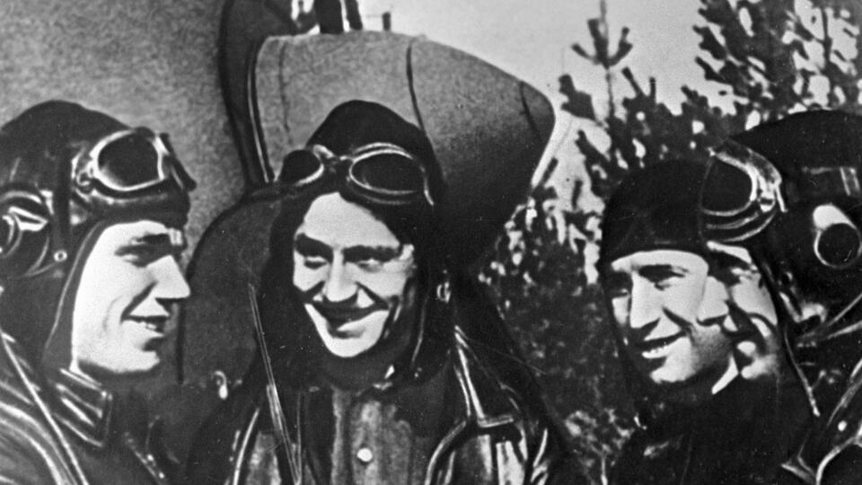
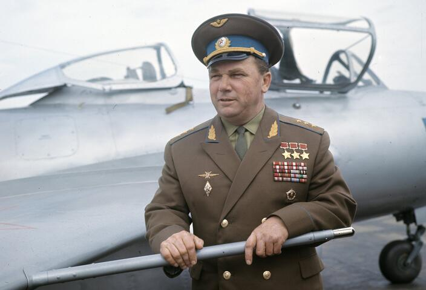

Иван Кожедуб
"Стреляю – не падает": как Иван Кожедуб сражался с фашистами в небесах
Детство и юность
Будущий трижды Герой Советского Союза родился 8 июня 1920 года в украинском селе Ображиевка Глуховского уезда Черниговской губернии (сейчас это Шосткинский район Сумской области). Иван Кожедуб был младшим, пятым ребенком в большой крестьянской семье. Его отец занимался землей и работал на фабрике, но находил время для книг и даже сам сочинял стихи. Детей он воспитывал в строгости, старался привить им такие качества, как упорство и трудолюбие. В 14 лет Иван окончил неполную среднюю школу и поступил в химико-технологический техникум. Как и многие сверстники, он буквально бредил небом, поэтому в 1938 году записался в аэроклуб, а через год уже совершил первый полет. В 1940-м Кожедуба призвали в Красную армию, и навыки, полученные в аэроклубе, определили будущую военную специальность.

Новобранца направили на обучение в Чугуевское военное авиационное училище. После его окончания Кожедуба оставили в нем летчиком-инструктором за успехи в тактическом планировании и мастерстве пилотажа.
Первый бой
С началом Великой Отечественной Ивана Кожедуба и все училище перевели в Казахстан, но после многочисленных рапортов осенью 1942 года его отправили в Москву. Здесь он попал в 240-й истребительный авиаполк под командованием Игнатия Солдатенко. На первое боевое задание Кожедуб вылетел в марте 1943 года. Этот бой на Воронежском фронте мог оказаться для него последним. Пилот нарушил главную заповедь летчика-истребителя: никогда не терять своего ведущего. Именно это с Иваном и произошло. Вражеский "Мессершмитт" воспользовался ситуацией, пушечная очередь ударила точно в кабину. Первый снаряд задел шлемофон, от второго снаряда, фугасного, от гибели Кожедуба спасла бронеспинка кресла. Неприятности на этом не закончились – при возвращении на аэродром пилот попал под огонь советских зениток. Изрешеченный самолет удалось посадить, но восстановлению он не подлежал.

Поначалу провинившегося летчика даже собирались перевести служить на пост оповещения. Но командир полка Солдатенко разглядел в Кожедубе будущего аса и позволил продолжать участие в боевых вылетах.
Рискованный прием
6 июля 1943 года в небе над Белгородом Иван Кожедуб вступил в бой, какого еще не знала история авиации. Одна советская эскадрилья против сорока немецких самолетов. "Я никогда не был в таком бою. В небе все смешалось: небо, земля, самолеты – наши, противника. Я никак не могу поймать прицел. Бой уже длился около двадцати минут, а неприятельские самолеты не уходят. Мне очень хотелось сбить самолет. Я присмотрел один – он приотстал. Я к нему. Приближаюсь, нажимаю на гашетки, стреляет пушка... Самолет не падает! Я еще стреляю – не падает! Я – ближе к нему, начал маневрировать. Думаю – не уйдешь, сейчас я тебе дам как следует! И с короткой дистанции зажег этот самолет", – вспоминал прославленный ас. Из схваток на Курской дуге Кожедуб вышел с девятью личными победами. И обрел свой фирменный прием, рискованный, но очень эффективный: подойти ближе к противнику, затем спикировать, атаковать снизу и открыть огонь. Совершать такие маневры мог только очень уверенный в себе пилот, каким и был Иван Кожедуб.
Дерзкая атака
Самые главные черты характера героического летчика – мужество, отвага и исключительное хладнокровие – не раз играли ему на руку в воздушном бою. О некоторых из них среди его сослуживцев ходили легенды. 30 сентября 1943 года Кожедуб сопровождал в небе переправу войск через Днепр. Делая вираж, он случайно оказался без прикрытия товарищей, и в этот же момент заметил немецкие "Юнкерсы". Кожедуб не растерялся и в одиночку спикировал на бомбардировщики. Сделав несколько виражей, он ворвался в звенья противника. Атака смелого русского летчика-одиночки была для немцев столь неожиданной и дерзкой, что они в смятении прекратили бомбежку и ушли в оборону. Увидев растерянность врага, Иван Никитович решился на еще более смелый шаг: он спикировал на один из оторвавшихся Ju 87 и сбил его. Горящие обломки самолета уронили боевой дух противника, и бомбардировщики отступили. Спустя три дня после этого одиночного боя Кожедубу и его товарищам пришлось столкнуться с еще более превосходящим числом противника. Прикрывая плацдарм на берегу реки, в небо поднялись девять Ла-5. Практически сразу пилоты заметили колонну пикирующих "Юнкерсов", каждые девять самолетов которых прикрывали шесть истребителей Ме-109. Кожедуб во главе пяти машин атаковал группу бомбардировщиков. Противник, не ожидавший атаки от малого числа советских самолетов, заметался. Спустя минуту загорелись и упали на землю два Ju 87. Уцелевшие немецкие бомбардировщики из первой девятки отступили, чуть позже повернула назад и вторая волна "Юнкерсов". Эффектную точку в сражении поставил, конечно, герой-ас, превратив в огненный шар один из последних истребителей люфтваффе.
Сбит реактивный Me-262
В середине февраля 1945 года в бою над Одером Иван Кожедуб вписал в свою биографию еще одну важную деталь – одним из первых в мире он уничтожил новейший реактивный истребитель – бомбардировщик люфтваффе Me-262. Взлетев в небо 19 февраля со своим другом и напарником Дмитрием Титоренко, Кожедуб на высоте более 3000 метров обнаружил неизвестный самолет, который летел на максимальной для советских Ла-7 скорости. Непревзойденный ас заметил, что немецкий пилот не контролирует пространство под собой, полагаясь на высокую скорость машины. Этим фактом и решил воспользоваться летчик – он задумал встретить немца на пересекающемся курсе и расстрелять его снизу. Но Титоренко открыл огонь первым, немало удивив Кожедуба. "Что такое? В противника летят трассы: ясно – мой напарник все-таки поторопился! Про себя нещадно ругаю Старика [Титоренко]; уверен, что план моих действий непоправимо нарушен. Но его трассы нежданно-негаданно мне помогли: немецкий самолет стал разворачиваться влево, в мою сторону. Дистанция резко сократилась, и я сблизился с врагом. С невольным волнением открываю огонь. И реактивный самолет, разваливаясь на части, падает", – так в своих мемуарах вспоминал об этом поединке Иван Кожедуб. После войны Иван Никитович решил продолжить службу. Также он продолжал учиться: в 1949-м окончил Военно-воздушную академию, а в 1956-м – Военную академию Генерального штаба. Участвовал в военных действиях в Корее, под его командованием была 324-я истребительная авиационная дивизия. В 1985 году Ивану Кожедубу было присвоено звание маршала авиации.
